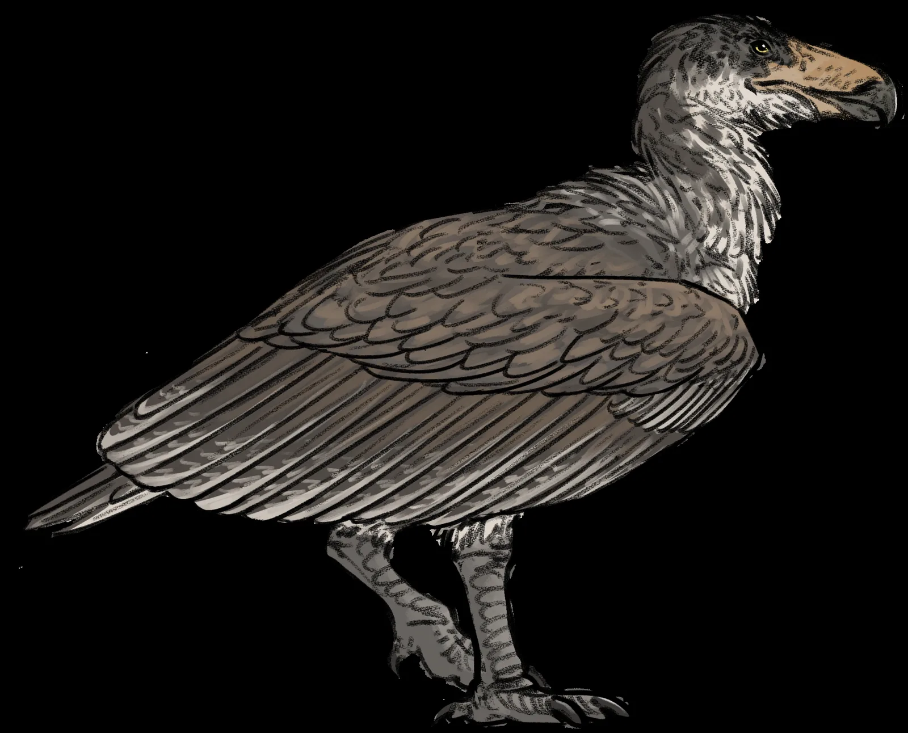

A very large bird
Argentavis
A skeleton on display, not an invented wingspan.
Drawing: Connor Ashbridge, CC BY-SA 4.0, via Wikimedia Commons. Artist’s concept, not a photograph. Drawing file page

TODO machine-draft translation: English for review.
There is no film of this animal made for this site. The picture behind the title is a drawing. The photograph lower down is a skeleton on display.
What we know
- Campbell and Tonni, 1980, named Argentavis magnificens from the Huayquerian of Argentina. Campbell and Tonni, 1980
- Paleobiology Database occurrences of this species are binned 8 to 5 million years ago. That file is a data table, not a museum label. Paleobiology Database occurrences
- The photograph is a skeleton on display in Trelew. This page does not identify it as the type specimen. No wingspan is given, because this page does not invent one.
- The pin is the museum in Trelew where that skeleton is on display. It is not the quarry. Created by the Founder and SI.


Sources (4)
- Campbell and Tonni, 1980
- Paleobiology Database occurrences of Argentavis magnificens
- Wikimedia Commons — the Trelew skeleton, CC0
- Wikimedia Commons — the life restoration, CC BY-SA 4.0